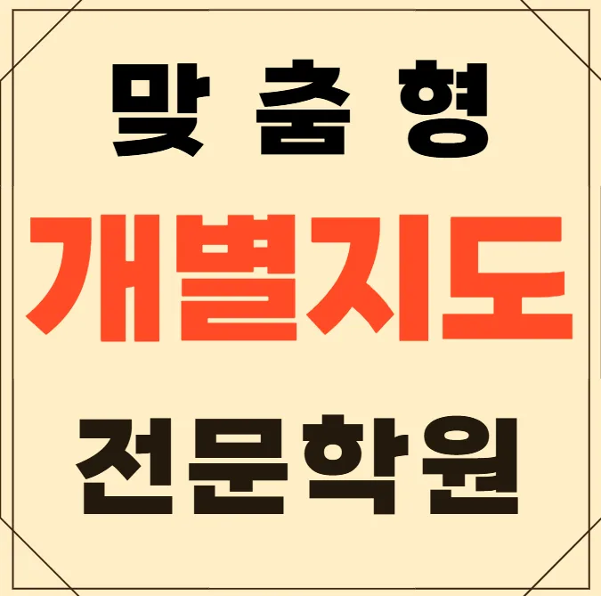

첫째, 교육 목표와 현재 실력을 객관적으로 파악해요. 둘째, 강사의 전문성 및 지도 방식이 학생 성향과 맞는지 확인해요. 셋째, 수업 시간과 교통 편의성을 고려해요. 넷째, 체계적인 피드백과 학습 관리 시스템이 제공되는지 살펴보요. 마지막으로, 광산수완 고1 영어학원 비용 대비 기대 효과를 비교해요. 추가로, 체험 수업 참여 여부도 중요한 판단 요소가 돼요.
광산수완 학부모들은 아이들의 성장 단계마다 다른 학습 전략이 필요하다고 느껴요. 초등 저학년은 기본 개념을 시각 자료와 놀이 중심 활동으로 잡아가며, 매주 짧은 평가로 이해도를 점검해요. 초등 고학년은 주 2회, 60분 수업으로 심화 개념을 문제 풀이와 토론을 병행하며 실력을 끌어올려요. 중학생은 지문 읽기 전 핵심 정보를 미리 체크하고, 독해와 논술 능력을 동시에 강화해요. 고등학생은 자기주도 학습 계획표를 밤에 검토하며, 목표 설정과 시간 관리 능력을 키워요. 전체 학년은 단원별 핵심 개념이 정리된 요약지를 수업 직후 배포해 복습을 효율적으로 진행해요.
와와학습코칭센터는 발표 중심의 자기 피드백 활동을 통해 사고력을 키워요. 교사는 학생 개개인의 강점과 약점을 분석해 맞춤형 목표를 설정해 주고, 매주 진행되는 모의 발표에서 실전 감각을 높여 줘요. 수강료는 초등 5개월 200,000원, 중등 3개월 220,000원으로 비용 대비 높은 효과를 기대할 수 있어요. 특히 시험 전 최종 요약자료를 배포하고, 복습 단계에서 속도감 있는 풀이 연습을 제공해요.
| 학원명 | 와와학습코칭학원 |
| 수강료 | 초등5 200,000원 | 중등3 220,000원 |
CURRICULUM
이 광산수완 고1 영어학원의 커리큘럼은 일대일 맞춤 지도와 정기적인 학습 집중 게임을 결합해 효과를 극대화해요. 첫째, 개인별 학습 진단 후 맞춤형 계획을 수립하고, 매주 목표를 설정해 체크리스트로 관리해요. 둘째, 짧은 시간에 집중도를 높이는 게임형 테스트를 주기적으로 제공해 학습 흥미를 유지해요. 셋째, 실전 모의고사를 두 차례 진행하고, 결과를 비교 분석해 보완할 부분을 구체적으로 제시해요. 마지막으로, 학습 내용은 핵심 포인트를 간결히 정리한 요약 자료와 함께 제공돼 복습 효율을 높여요
학생들이 광산수완 고1 영어학원 선택 단계에서 흔히 저지르는 실수는 충분한 정보 수집 없이 바로 등록하는 것이에요. 등록 후에는 목표 설정 없이 수업에만 집중해 성과를 내기 어려운 경우가 많아요. 학습 관리 단계에서는 피드백을 무시하고 자기 주도 학습을 포기하는 경향이 나타나요. 이러한 실수를 줄이기 위해서는 단계별 체크리스트와 꾸준한 자기 평가가 필요해요. 광산수완 주변에서도 이런 점을 유념하면 더 나은 결과를 기대할 수 있어요.
학생이 "나는 원래 못해"라고 생각할 때부터 시작하는 수업은 자신감 회복을 최우선으로 해요. 누락된 수업 내용은 자동으로 보강 영상과 복습 자료로 대체하고, 정서적 안정을 위해 상담 시간을 별도로 배정해요. 수업 중에는 작은 성공 경험을 자주 제공해 몰입도를 높이고, 학습 진도에 맞춰 단계별 목표를 설정해 스스로 진행 상황을 확인하도록 돕어요. 또한 학습 스트레스를 완화하기 위해 휴식과 놀이를 적절히 배치해 전반적인 학습 효율을 높여요.
초등학교 4학년으로 교재를 꾸준히 풀지만 독해에 시간이 많이 걸리는 학생에게 적합해요. 문제 풀이만 반복하기보다 이해 중심의 학습을 원한다면 이 광산수완 고1 영어학원의 맞춤형 피드백이 큰 도움이 될 거예요. 또한 자기주도 학습 습관을 기르고 싶은 학생에게도 좋은 선택이 될 수 있습니다.
학습 집중도를 높이는 교사의 진행 리듬이 딱 맞아 스스로도 몰입이 쉬워요. 선생님은 질문 하나도 가볍게 넘기지 않으시고 친절히 설명해 주셔서 이해가 깊어졌어요. 장기적인 시선에서 성장했음을 실감하고 목표 설정이 명확해졌어요. 꾸준히 이어지는 대화가 신뢰를 더 깊게 만들고 학습에 대한 자신감이 생겼어요. 실수 원인을 차분히 분석해 주시니 개선 방향이 바로 보였어요.

| 학원명 | 와와학습코칭학원 |
| 등록번호 | 제3918호 |